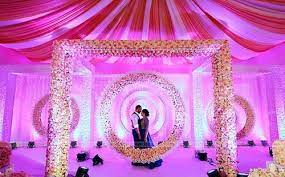
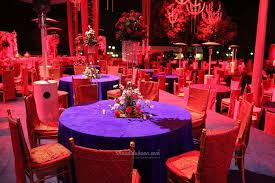
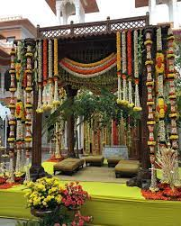
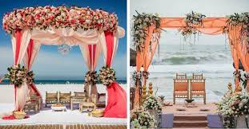
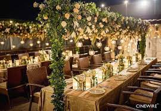
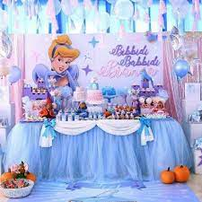

Follow us


A wedding is typically a happy time for families to celebrate.A wedding is a ceremony where two people are united in marriage. Wedding traditions and customs vary greatly between cultures, ethnic groups, religions, countries, and social classes.

Thinking about having a theme wedding? Take a look and choose from our exclusive list of Indian Wedding themes, while planning a wedding experience that would be remembered for ages.
Red is the color of love, passion, and strength, so it's no surprise that it's also a popular choice for wedding color palettes. These red wedding theme ideas are perfect for bringing a sense of romance and intensity to your big day, whether your wedding aesthetic is classic, bohemian, or completely unconventional. And if you think red is just a winter wedding color, think again! We're sharing our fave red wedding ideas for all seasons to prove that this color goes way beyond your average holiday-themed decor. From classic apple red to moody burgundy and sultry marsala, this fiery color has serious staying power when it comes to your wedding decor.
A traditional wedding focuses on the marrying couple's heritage, and fuses culture and a party atmosphere to ring in a new marriage. It's all about incorporating traditions from both cultures, and often little consideration is given to the overall cost of the wedding.
Brides! If your wedding date is finally fixed so first of all congratulations on the same. I am sure that you must have started searching and curating the best wedding invites, outfits,etc. for your wedding! But what about the venue, ladies? Having a fantasy world to get married beside a beach is something we all dream, right? So, how about we make your dream come true! Yes, you too can get hitched at a beach destination wedding .. make your dream wedding with us
Whether you’re planning a large outdoor wedding or a small garden ceremony, a wedding surrounded by nature is beautiful no matter where you live! From earth tones to lush decor and foliage, here are some of our favorite ideas for a nature-themed wedding.
A birthday is the anniversary of the birth of a person, or figuratively of an institution. Birthdays of people are celebrated in numerous cultures, often with birthday gifts, birthday cards, a birthday party, or a rite of passage
Choosing a theme can be the jumping off point for a great party, so check in with your child to see what sounds like fun. If you're looking for a fresh take on a birthday party theme, check out our clever tips, creative ideas, and practical advice to make your party a blast.
Make ypur kids enjoy their birthdays... with their favourite cartoon characters in the cartoon themed birthday party.
Friends make occasions even more special ... so celebrate your birthdays with your friends in a specialised theme for that occasions with choosing our friends themed birthday events
A baby shower is a party of gift-giving or a ceremony that has different names in different cultures. It celebrates the delivery or expected birth of a child or the transformation of a woman into a mother. a baby makes life even more cuter .. celebrate the the new beggings in you with us